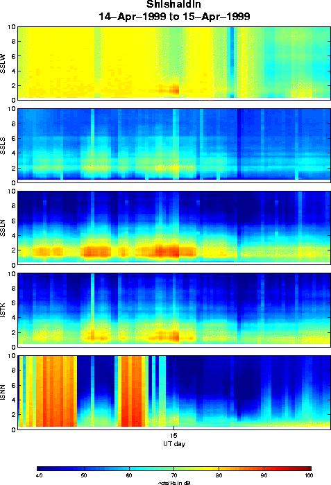

Spectrogram for Shishaldin 14-15th April, 1999. The most intense tremor burst began around 2200 UT on April 14th. SSLW is very noisy but the high amplitude tremor (red) still shows. ISNN had problems for most of April 14th.
.
Glenn Thompson, 5 May 1999.